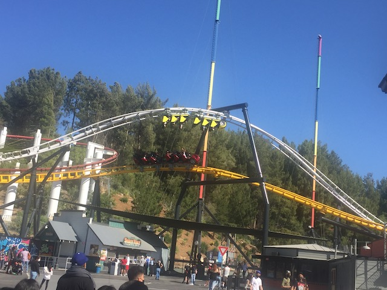
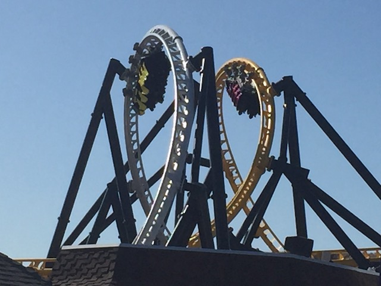

| |
Spring SFMM 2021
All right. After a YEAR of lockdown and not riding ANYTHING (excluding my weekend getaway to Lagoon), the (theme park) lockdown has FINALLY ended, and as such, I'm off! Very first day they open back up and here I am at my home park! Oh sh*t! That's the line for parking!? At Old Road!? This is gonna be brutal.
So I know that having been closed for over a year, things may be a little rusty at SFMM. However, if there's ANYTHING that they need to fix, it's the parking line. Parking got more complicated thanks to the road no longer just leading to SFMM, but there's actually houses behind the park now (none of which are affordable, Thanks California. Really addressing that housing crisis I see), so now lanes have to be reserved for that, and there's merging from cars in the housing lanes trying to get into the SFMM lanes, causing even more traffic, and.....it's a painful mess. There's gotta be some solution to prevent THIS (I could WALK to SFMM faster than this. Not run, but F*CKING WALK!!!)
I'll gladly wear my mask! I'll social distance! I'll do all that stuff! Just give me the roller-coaster goodness I've been craving for so long!
I don't think I've EVER been this happy to be at Six Flags Magic Mountain in the entire history of Incrediblecoasters. I'm more excited to be here than I am for West Coast Bash or when I came to ride Twisted Collosus for the first time. This beats out BOTH of those as far as excitement to be at the park due to the lockdown.
Oh, I missed you too.
 First Coaster of 2021. I think I picked a good one to officially come out of lockdown with. =)
First Coaster of 2021. I think I picked a good one to officially come out of lockdown with. =)
So happy Six Flags still accepts zippered pouches and didn't deem them to be a COVID hazard unlike another certain chain *cough* Cedar Fair. That's bullsh*t and not true *cough*
 I'm not sure if Scream really is running great or if I'm just so happy to be riding stuff again that I'll accept it any condition? Regardless, this was a really good ride on it.
I'm not sure if Scream really is running great or if I'm just so happy to be riding stuff again that I'll accept it any condition? Regardless, this was a really good ride on it.
OK. These are the lines I like to see. Happy to see this the day they reopen.
It may be a clone found at damn near all the Six Flags parks now, but at least it's still one of the best flat rides. That part hasn't changed.
Yeah. I paid way too much for a meal that was not the best. But whatever. I'm too happy to have the Covid Theme Park Lockdown be over to let overpriced mediocre food get me down.
 Let's keep the coaster streak going with Riddlers Revenge.
Let's keep the coaster streak going with Riddlers Revenge.
 OK. I may be ecstatic about riding coasters in SoCal again after so long and forgiving about a lot of stuff, but Riddlers definately needs more work done. It wasn't running well today.
OK. I may be ecstatic about riding coasters in SoCal again after so long and forgiving about a lot of stuff, but Riddlers definately needs more work done. It wasn't running well today.
 And even sluggish mildly rough Riddlers is still really fun.
And even sluggish mildly rough Riddlers is still really fun.
You know, I'm not sure if the Single Riders Line is still going or if it's down thanks to social distancing. Normally, I'd be upset about it being gone, except...you know. Global Pandemic.
Oh no! Indoor Spaces! COVIDs gonna spread! Everybody panic! =P
Ha ha ha. The Question Mark is broken and the light is just dragging. Probably should fix that. Really should spruce up the Riddlers Revenge station. Bring back the smoke, the neon lights, play Ecuador louder. Well, at least do that when the pandemic is officially over.
Such opressive regulations! Six Flags is being run by Nazis now! Don't they know that they're trampling on muh freedom!? *end sarcasm*
Ooh. Artsy shot of West Coast Racers (which we rode today BTW).
And of course, I am not waiting this long without getting back on one of my favorite coasters (even if it's Japanese brother is much better)
With all the coasters I've done, this still is something that I just love so much.
 "We are high up! Going down!"
"We are high up! Going down!"
 Just such a great ride. Never fails to put a smile on my face and get me in a good mood.
Just such a great ride. Never fails to put a smile on my face and get me in a good mood.
I see the Green Lantern memorial has officially gone bye-bye.
Quick note Six Flags. I know you've been closed for over a year thanks to lockdown. But when you have time, this sign needs to be cleaned BADLY. Just a hint. ;)
Well Six Flags Magic Mountain, this was a really fun day. Sure, it may not have been the best day at the park ever, and there is still some work to do to recover from a year of inoperation, but I had a lot of fun today, was SUPER happy to get on X2, Twisted Collosus, and other fun rides, and this was EXACTLY what I needed to scratch that roller coaster itch that had been flaring up for the past 7 months since Lagoon.
 Hey. You noticing yourself developing COVID symptoms? Well, don't worry. Just head over to the parking lot and get yourself tested. =)
Hey. You noticing yourself developing COVID symptoms? Well, don't worry. Just head over to the parking lot and get yourself tested. =)
Unfortunately, Jimmy Deans is closed today. So....Del Taco works too I guess.
All right. We later took another visit to SFMM to hang out with some friends, and hey. Might as well include it in the update too.

It may not be the most intense ride or anything, but West Coast Racers is just a ton of fun.

The dueling truly makes this ride, and of course, it's significantly better with friends.
 Can S&S please offer the Arrow Suspendeds again? Seriously, I want these things to make a comeback damn it!
Can S&S please offer the Arrow Suspendeds again? Seriously, I want these things to make a comeback damn it!
 You know, it's funny. This is one of the rides I usually end up skipping. Kind of weird that now it gets a ride. But hey. Still a lot of fun.
You know, it's funny. This is one of the rides I usually end up skipping. Kind of weird that now it gets a ride. But hey. Still a lot of fun.
I knew it! I knew it! Tidal Wave is officially leaving! My prediction about Tidal Wave leaving in the next 5 years (from 2019) officially came true! I'm the new Nostredamus! =P Meh, you won't be missed Tidal Wave.
Hey pussies afraid of the big coasters and sticking to dark rides, thanks to COVID-19, Justice League is now officially the most dangerous ride at Six Flags Magic Mountain. I guess Lex Luthor and the Joker's evil plot has officially worked (COVID is officially their fault).
 Riddlers Revenge was running MUCH better this time around. It just needed more time to warm up after such a long hiatus.
Riddlers Revenge was running MUCH better this time around. It just needed more time to warm up after such a long hiatus.
OK. Time for an Incrediblecoasters Rant. So as we were finishing up our day, we wonder if there's enough time to squeeze in a Full Throttle ride before the park closed. It's gonna be a close call. But sure enough, we make it inside the line. Well, the park closes, and then the security guard, without even saying anything, just takes the fence and places it in the middle of the line. So basically, anyone who was in the line that extended on the midway was just thrown out of line. WHAT THE F*CK!!? YOU CAN'T DO THAT ASSHOLE!!! AND THIS DIPSH*T DIDN'T EVEN ACKNOWLEDGE US!!? So naturally, this wasn't just us who was pissed, but EVERYONE in line behind the cut-off was pissed and confused. The operator didn't even say anything until 5 minutes when they pretty much just said "We know you got in line, and that once you're in line, you get to ride. We know that's the rule. But whatever. You're sh*t out of luck. Sorry, not sorry" pretty rudely. UGH!!! Needless to say, I expressed my thoughts on this incident to Six Flags when they gave those "Thanks for visiting. Please rate your visit and show us how to improve if you're not 100% satisfied" surveys that they always send. Really hope disciplinary action was taken on that security guard.
 Thanks for yet another fun day. Sure, there are a couple things that you need to work on (Parking, some general maintenence, everything involving what happened at Full Throttle), but it was overall really fun. Looking foreward to returning to SFMM and just so happy to be riding roller coasters again.
Thanks for yet another fun day. Sure, there are a couple things that you need to work on (Parking, some general maintenence, everything involving what happened at Full Throttle), but it was overall really fun. Looking foreward to returning to SFMM and just so happy to be riding roller coasters again.
Home
|